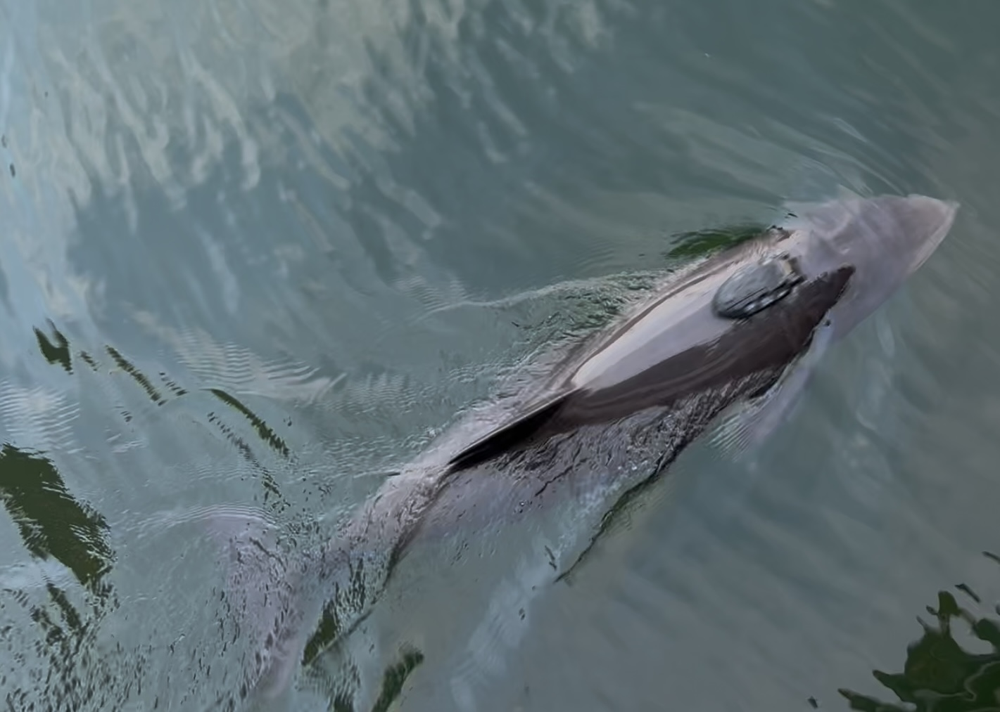

Publications
All my peer-reviewed and preprint work, theses, and other contributions.

Published Articles
Programmed unmanned aerial vehicles show great potential for monitoring marine
megafauna in specific areas of interest.
Hartmann, D., Palmqvist, V. and Stedt, J. (2025).
Remote Sensing in Ecology and Conservation.
https://doi.org/10.1002/rse2.70043
Preprints and Other
(To be added.)
Theses
Drivers of the small-scale spatio-temporal distribution of harbour porpoises
(Phocoena phocoena) investigated via UAV around Kullaberg, Sweden.
Hartmann, D., Stedt, J. and Carlsson, P. (2024).
Master’s thesis, Department of Biology, Lund University.
The effects of drought on soil community dynamics in different management systems
in Scottish grassland fields.
Hartmann, D. and Caruso, T. (2022).
Bachelor’s thesis, School of Biology and Environmental Science,
University College Dublin.